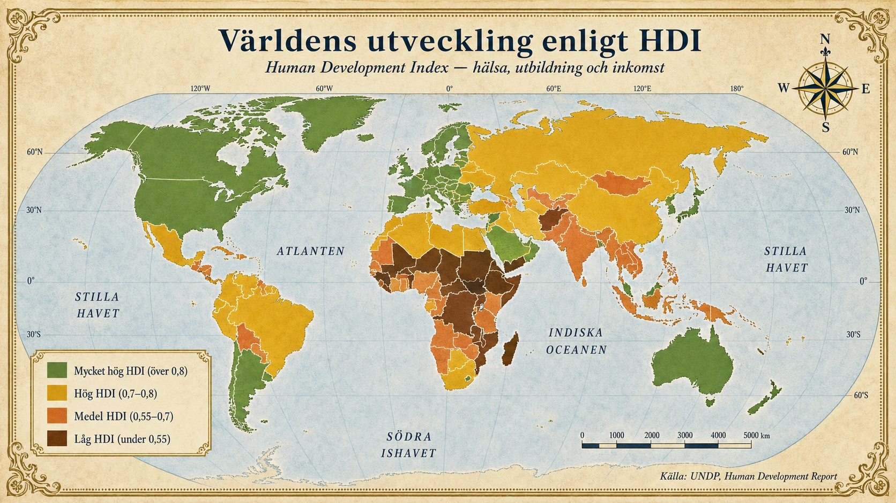
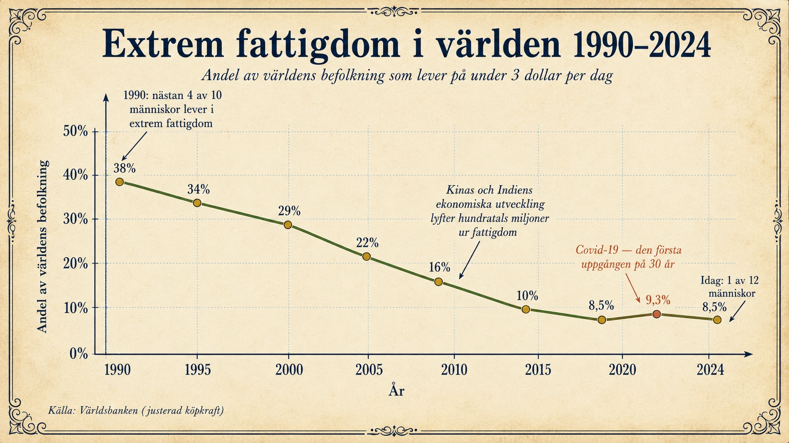
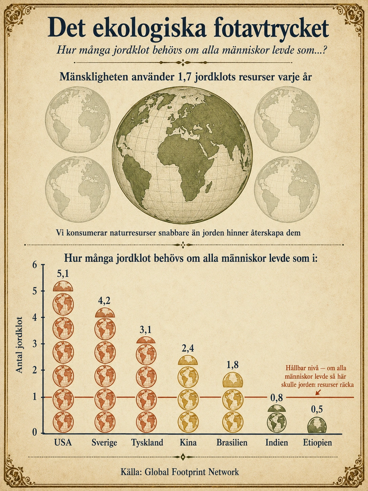
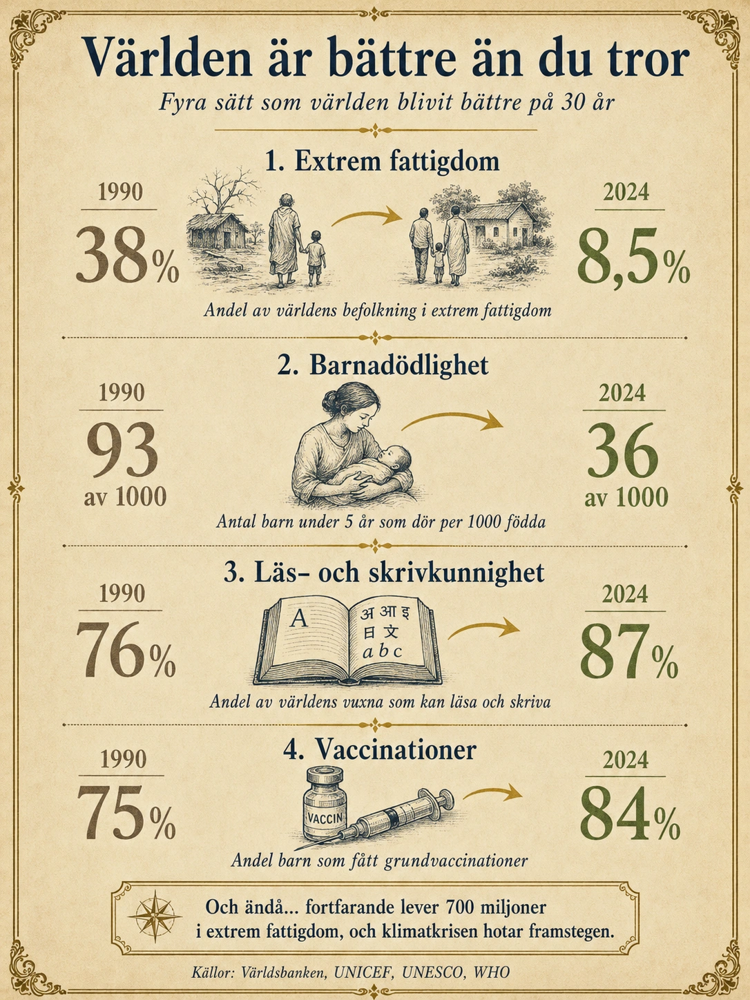
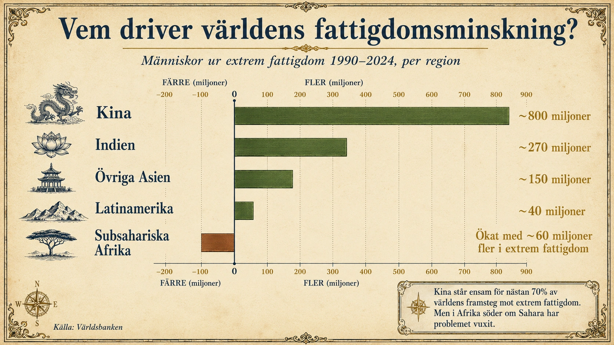
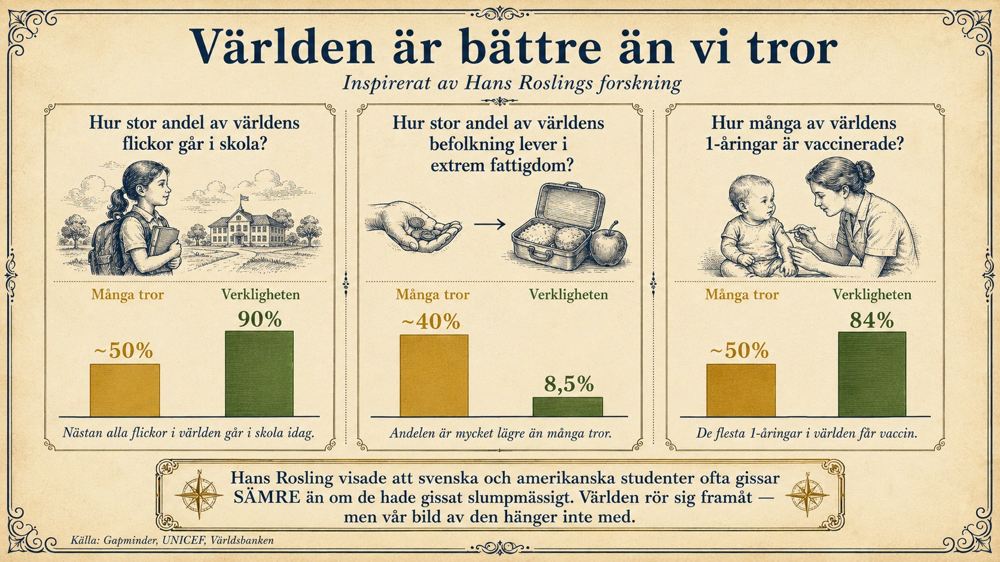

Befolkning och resurstillgång
— Fattigdom, överbefolkning och framtidens utmaningar —
Befolkning och resurser — hur människan och jorden hänger ihop
I de fem föregående avsnitten har vi sett att människor är ojämnt fördelade på jorden, hur befolkningar förändras, vart människor flyttar och hur städer växer. Nu kommer vi till den fråga som ligger bakom allt: under vilka villkor lever människor på jorden? Har de tillräckligt med mat, vatten, utbildning och möjligheter? Och hur hänger antalet människor ihop med jordens resurser?
Detta avsnitt handlar om fattigdom, välstånd och hållbarhet — tre frågor som tillsammans formar 2000-talets största utmaning: hur ska alla människor få ett bra liv utan att jordens resurser förstörs?
Vad är fattigdom?
Fattigdom betyder att människor saknar tillräckliga resurser för att kunna leva ett tryggt och värdigt liv. Det är ett bredare begrepp än det kan verka. Fattigdom handlar inte bara om att ha för lite pengar — det handlar också om bristen på mat, rent vatten, bostad, sjukvård, utbildning, säkerhet och möjlighet att påverka sitt eget liv.
En människa kan vara fattig därför att familjen inte har råd med mat. Men en människa kan också vara fattig därför att det inte finns någon skola i byn, ingen läkare inom flera mil, ingen elektricitet, eller inga vägar som leder dit jobben finns. Två familjer med samma inkomst kan därför vara olika fattiga beroende på vilket samhälle de lever i.
Olika typer av fattigdom
Det finns tre begrepp som hjälper oss förstå fattigdomens olika ansikten.
Extrem fattigdom är det allvarligaste. Det innebär att människor lever på så lite pengar att de har svårt att klara även sina mest grundläggande behov — mat, vatten, kläder, tak över huvudet. Världsbanken använder en internationell fattigdomsgräns för extrem fattigdom som ligger på 3 dollar per person och dag, justerat för köpkraft. Genom att räkna i köpkraft kan man jämföra fattigdom mellan länder på ett rättvist sätt — 3 dollar köper olika mycket i Sverige och i Bangladesh, och måttet tar hänsyn till det.
Undernäring handlar specifikt om mat och energi. En människa är undernärd när maten hen får i sig inte räcker för kroppens behov. FN:s livsmedelsorgan FAO beskriver hunger som kronisk undernäring — att människor under längre tid inte får tillräckligt med energi från sin mat. Idag lever omkring 800 miljoner människor i världen i hunger. Det är fler än de senaste decennierna — en oroväckande utveckling som beror på krig, klimatförändringar och stigande matpriser.
Relativ fattigdom är den fattigdom som finns även i rika länder. Den innebär att man är fattig jämfört med andra i samma samhälle. I Sverige svälter de flesta inte, men människor kan ändå leva i fattigdom. Det kan betyda att en familj inte har råd med fritidsaktiviteter, vinterkläder, en fungerande dator, glasögon, semester eller andra saker som de flesta tar för självklara. Relativ fattigdom är inte mindre allvarlig — barn som växer upp i relativ fattigdom missar ofta erfarenheter och möjligheter som påverkar dem resten av livet.
Fattigdomen i fattiga länder handlar därför ofta om livets grundläggande behov: mat, rent vatten, bostad, säkerhet, sjukvård och skola. Fattigdomen i rika länder handlar oftare om utanförskap, ojämlikhet och svårigheten att delta fullt ut i samhället.
Hur mäter man välstånd?
För att kunna jämföra länder och följa utvecklingen behöver vi mått.
Det vanligaste måttet är BNP per person — bruttonationalprodukten utslagen på antalet invånare. BNP visar det samlade värdet av allt som produceras i ett land under ett år. Hög BNP per person tyder ofta på högre välstånd. Men måttet har en svaghet: det säger ingenting om fördelningen. Ett land kan ha hög BNP men ändå ha enorma skillnader mellan rika och fattiga. Saudiarabien har till exempel hög BNP per person, men en stor del av befolkningen tar mycket liten del av det välståndet.
Därför har FN utvecklat ett bredare mått: HDI, Human Development Index. HDI väger samman tre saker:
- Hälsa — mäts främst genom medellivslängd
- Utbildning — mäts genom hur många år människor går i skolan
- Levnadsstandard — mäts genom inkomst per person
HDI ger ett tal mellan 0 och 1, där högre värden betyder bättre utveckling. Norge, Schweiz, Sverige och Island ligger alla över 0,95. Centralafrikanska Republiken, Sydsudan och Niger ligger under 0,4. Världens genomsnitt ligger på omkring 0,73.
HDI är inte ett perfekt mått heller — det fångar inte alla viktiga aspekter av livet, som demokrati, miljö eller lycka. Men det är ett bredare och mer rättvist verktyg än bara BNP.

Hur kan länder delas in?
Förr delade man ofta in världen i i-länder (industriländer) och u-länder (utvecklingsländer). Det är en grov uppdelning som inte riktigt fungerar längre — länder kan vara fattiga på olika sätt och utvecklas i mycket olika takt.
Idag används oftare en uppdelning efter inkomstnivå:
- Höginkomstländer har välutbyggd sjukvård, lång utbildning, god infrastruktur och starka demokratiska institutioner. Hit hör Norden, västra Europa, USA, Kanada, Australien, Japan, Sydkorea och Singapore.
- Medelinkomstländer har en ekonomi som vuxit kraftigt, men där skillnaderna ofta är stora. Vissa människor lever mycket modernt medan andra fortfarande lever i fattigdom. Hit hör Kina, Indien, Brasilien, Mexiko, Indonesien, Sydafrika och flera till.
- Låginkomstländer har ofta låga inkomster för majoriteten och en stat som har svårare att erbjuda skola, sjukvård, vägar och trygghet. Hit hör många länder i Subsahariska Afrika och delar av Sydasien.
Men det är viktigt att komma ihåg att inget land är fattigt eller rikt på exakt samma sätt överallt. Sverige är ett rikt land, men har fattiga områden i storstadsförorter och i delar av Norrlands inland. Indien är ett medelinkomstland, men har enorma skillnader mellan miljardärerna i Mumbai och bönderna i Bihar. Varje land rymmer många olika verkligheter samtidigt.
Den extrema fattigdomens utveckling
Här kommer en av världsgeografins mest hoppfulla berättelser — och en av de minst kända.
År 1990 levde omkring 38 procent av världens befolkning i extrem fattigdom. Nästan fyra av tio människor hade så lite pengar att de hade svårt att klara grundläggande behov. Det var en chockerande siffra, men den hade dessutom varit ungefär densamma under tidigare decennier.
Sedan dess har något hänt. Andelen extremt fattiga har sjunkit nästan utan avbrott i 30 år. År 2024 är siffran omkring 8,5 procent — alltså mindre än en av tolv människor. Den absoluta minskningen handlar om över en miljard människor som har lyft sig själva och sina familjer ur extrem fattigdom.

Vad driver utvecklingen? Främst två saker. Kinas ekonomiska tillväxt under 1980–2010 lyfte över 800 miljoner människor ur extrem fattigdom. Och Indiens utveckling har följt med — om än långsammare. Tillsammans står de två länderna för den största delen av världens fattigdomsminskning.
Men det finns mörkare moln. Covid-19-pandemin 2020 orsakade den första uppgången av extrem fattigdom på 30 år. Klimatförändringar, krig och stigande matpriser har gjort att kurvan saktat in på senare år. Frågan om vi kommer nå FN:s mål om att utrota extrem fattigdom till 2030 är öppen — och möjligen redan förlorad.
Och även om andelen sjunkit kraftigt finns det fortfarande nästan 700 miljoner människor som lever i extrem fattigdom. Det är en gigantisk siffra. Berättelsen om framgång och berättelsen om kvarstående problem måste hållas i huvudet samtidigt.
Varför uppstår fattigdom?
Fattigdom har sällan en enda orsak. Olika orsaker hänger ihop och förstärker varandra — det blir som en kedja där ett problem leder till nästa.
Brist på utbildning är en av de starkaste drivkrafterna. Om barn inte får gå i skolan får de svårare att läsa, skriva, räkna och få bra arbete som vuxna. Deras egna barn riskerar då att hamna i samma situation. Utbildning, särskilt utbildning av flickor, är därför en av de mest effektiva vägarna ut ur fattigdom.
Dålig hälsa är en annan stor faktor. Sjukdomar, undernäring och brist på sjukvård gör att människor får svårt att arbeta eller gå i skolan. När en familj måste lägga mycket pengar på mediciner kan den bli ännu fattigare än innan. Hälsa och ekonomi hänger tätt ihop.
Konflikter och krig är förödande. När krig bryter ut förstörs vägar, skolor, sjukhus, jordbruk och företag. Människor tvingas fly. Barn missar år av skolgång. Det tar generationer att bygga upp ett samhälle igen. Afghanistan, Jemen, Syrien och Sydsudan är alla länder vars utveckling skadats djupt av krig under de senaste decennierna.
Korruption och svaga institutioner bidrar också. Om pengar som skulle gått till skolor, vägar och sjukvård försvinner genom mutor eller dåligt styre får befolkningen sämre möjligheter. Detta är ett av de stora hindren för utveckling i många låginkomstländer.
Orättvis handel och skulder kan göra det svårt för fattiga länder att utvecklas. Om ett land mest säljer billiga råvaror (kaffe, bomull, mineraler) men måste köpa dyra färdiga varor från andra länder är det svårt att bygga upp en stark ekonomi. Många afrikanska länder hamnar i denna fälla.
Klimat och natur spelar också roll. Torka, översvämningar, jorderosion och brist på vatten gör jordbruk svårt. Klimatförändringar slår hårdast mot människor som redan är fattiga, eftersom de har minst resurser att skydda sig.
Och snabb befolkningstillväxt kan skapa problem om landet inte hinner bygga skolor, bostäder, sjukhus och arbetstillfällen i samma takt. Men här är det viktigt att förstå riktningen i kedjan. Många barn är ofta också en följd av fattigdom — när barnadödligheten är hög, pensioner saknas och familjen behöver arbetskraft föder kvinnor fler barn. Lösningen är inte att hindra familjer från att få barn, utan att skapa villkor där färre barn behövs.
Alla dessa orsaker hänger ihop. Fattigdom föder fattigdom. Låg utbildning leder till låg inkomst, låg inkomst leder till sämre hälsa, sämre hälsa gör det ännu svårare att ta sig ur fattigdomen. Det är därför fattigdom är så svår att bryta.
Överbefolkning och underbefolkning ur ett resursperspektiv
I avsnitt 4 mötte vi begreppen överbefolkning och underbefolkning i kontext av migration. Här tittar vi på dem från en annan vinkel — vad de betyder för resurser och hållbarhet.
Överbefolkning uppstår när befolkningen är större än vad områdets resurser och samhällssystem klarar av att försörja på ett hållbart sätt. Men begreppet är mer komplicerat än det låter — och det är värt att stanna vid det.
Det avgörande är inte bara hur många människor som bor på en plats. Det handlar också om:
- Hur mycket vatten, mat och energi som finns i området
- Hur tekniken och infrastrukturen fungerar
- Hur resurserna fördelas mellan människor
- Hur mycket människor konsumerar
- Hur känsligt området är för torka, översvämningar eller klimatförändringar
Tokyo har 37 miljoner invånare men fungerar relativt bra eftersom staden har välutbyggd infrastruktur, ekonomi och planering. Sahel-bältet i Afrika har mycket lägre befolkningstäthet men kämpar med överbefolkningsproblem eftersom marken är torr, vattnet knappt och tekniken otillräcklig. Överbefolkning är inte ett biologiskt utan ett samhälleligt fenomen.
Underbefolkning är motsatsen — när det bor så få människor i ett område att det blir svårt att upprätthålla ett fungerande samhälle. Skolor, vårdcentraler, butiker och kollektivtrafik kan inte upprätthållas. Befolkningen blir äldre när unga flyttar. Företag får svårt att hitta arbetskraft. Det är en spiral vi gick djupare in på i avsnitt 5.
Här är det viktiga: både överbefolkning och underbefolkning kan vara problem samtidigt — fast i olika delar av världen, och ibland i olika delar av samma land. Sverige har underbefolkning i Norrlands inland och knappare resurser i storstadsförorter. Indien har städer som växer för snabbt och landsbygder som tappar arbetskraft. Geografin är komplex.
Det ekologiska fotavtrycket — vår tids stora fråga
Här kommer kanske 2000-talets svåraste fråga. Är jorden överbefolkad globalt?
Det enkla svaret är: det beror på vad man menar. Jorden kan producera tillräckligt med mat åt alla människor som finns. Många forskare menar att problemet inte främst är antalet människor utan hur resurserna fördelas och hur mycket människor konsumerar.
Ett begrepp som hjälper oss förstå detta är ekologiskt fotavtryck. Det mäter hur mycket av jordens resurser en person, ett land eller hela mänskligheten använder. Global Footprint Network har beräknat att mänskligheten idag använder naturens resurser snabbare än jorden hinner återskapa dem — ungefär som om vi använde resurser motsvarande 1,7 jordklot.

Det chockerande är fördelningen. Om alla människor på jorden levde som genomsnittsamerikanen skulle vi behöva 5 jordklot. Som genomsnittssvensken: 4 jordklot. Som genomsnittsindiern: mindre än ett jordklot. Som etiopiern: ungefär halva jordklotet.
Det betyder att problemet inte är att Indien har för många människor. Problemet är att den rika världens konsumtionsnivå är ohållbar — om den spreds till alla. Och samtidigt kan vi inte be människor i Indien, Etiopien eller Bangladesh att inte få utvecklas. De har rätt till bättre liv, mer mat, mer trygghet, mer möjligheter.
Den stora framtidsfrågan
Detta för oss till geografins kanske viktigaste fråga: Hur kan alla människor få ett bättre liv utan att jordens resurser förstörs?
Det finns inget enkelt svar. Men flera vägar pekar i rätt riktning.
På individnivå är utbildning den enskilt mest kraftfulla faktorn. När människor — särskilt flickor — får utbildning förändras allt. De får högre inkomster, bättre hälsa, färre barn, mer makt över sina egna liv. Forskare brukar säga: "Ge en flicka utbildning och du förändrar en generation."
På samhällsnivå behöver länder bygga fungerande skolor, sjukvård, vägar, elnät, vattenförsörjning och rättssystem. Och staten behöver kunna ta in skatt och använda pengarna på sätt som gynnar befolkningen. Det handlar om långsamma, tråkiga och avgörande processer.
På internationell nivå behövs bistånd, rättvisare handel, klimatanpassning och fredsarbete. Rika länder kan bidra med pengar, teknik och kunskap. Men hjälp utifrån fungerar bäst när den stärker människors egen förmåga och inte skapar beroende.
Och på planetnivå behöver vi minska konsumtionen i de rika länderna samtidigt som vi låter de fattiga länderna utvecklas. Det är inte ett enkelt politiskt budskap. Men det är vad geografin och miljövetenskapen säger oss.
Sammanfattning av hela kapitlet
Vi har nu rest genom demografi och resurser i sex avsnitt:
- Jordens befolkning — människor bor ojämnt fördelade på jorden
- Lokaliseringsfaktorer — varför vissa platser blivit tätbefolkade
- Den demografiska transitionen — hur befolkningar förändras över tid
- Migration — vart människor flyttar
- Urbanisering — hur städerna växer och formar världen
- Befolkning och resurser — under vilka villkor människor lever
Tillsammans ger dessa avsnitt en bild av hur människan och jorden hänger ihop. Världen är inte rättvis. Människor föds in i mycket olika villkor. Men under de senaste 30 åren har den extrema fattigdomen halverats, läs- och skrivkunnigheten har stigit, barnadödligheten har sjunkit. Det finns hopp.
Samtidigt står vi inför stora utmaningar — klimatförändringar, ojämlikhet, krig och frågan om hur planetens resurser ska räcka till alla.
Geografi är inte bara läran om var saker ligger. Det är läran om varför världen ser ut som den gör och hur vi kan göra den bättre. När du har läst detta kapitel hoppas vi att du kan se världen med nya ögon — och se din egen plats i den.
Befolkning och resurser — hur människan och jorden hänger ihop
I de fem föregående avsnitten har vi sett att människor bor ojämnt fördelade på jorden, hur befolkningar förändras, vart människor flyttar och hur städer växer. Nu kommer den stora frågan: under vilka villkor lever människor?
Detta avsnitt handlar om fattigdom, välstånd och hållbarhet — tre frågor som tillsammans formar 2000-talets största utmaning:
Hur ska alla människor få ett bra liv utan att jordens resurser förstörs?
Vad är fattigdom?
- Fattigdom = att sakna det man behöver för ett tryggt liv
- Det handlar om mer än bara pengar — också mat, vatten, vård, skola, säkerhet
- Två familjer med samma inkomst kan vara olika fattiga beroende på samhället
Fattigdom betyder att människor saknar tillräckliga resurser för att kunna leva ett tryggt och värdigt liv.
Det är ett bredare begrepp än det kan verka. Fattigdom handlar om:
- För lite pengar
- För lite mat
- Brist på rent vatten
- Inga bostäder
- Ingen sjukvård
- Ingen utbildning
- Brist på säkerhet
- Ingen möjlighet att påverka sitt eget liv
Tänk så här: två familjer kan ha samma inkomst men vara olika fattiga. En familj i en by utan skola eller sjukvård är fattigare än en familj med samma inkomst i en stad med fungerande service.
Tre typer av fattigdom
- Extrem fattigdom = mindre än 3 dollar per dag
- Undernäring = inte tillräckligt med mat över tid
- Relativ fattigdom = fattig jämfört med andra i samma samhälle
Extrem fattigdom är det allvarligaste. Man lever på så lite pengar att man har svårt att klara grundläggande behov. Världsbankens gräns för extrem fattigdom är 3 dollar per person och dag.
Undernäring handlar om mat. En människa är undernärd när maten inte räcker för kroppens behov. Idag lever omkring 800 miljoner människor i hunger.
Relativ fattigdom finns även i rika länder. Det betyder att man är fattig jämfört med andra i sitt samhälle. I Sverige svälter de flesta inte, men många kan ändå inte ha råd med:
- fritidsaktiviteter
- vinterkläder
- bra dator
- semester
- glasögon
Tänk så här: fattigdom i fattiga länder handlar ofta om överlevnad. Fattigdom i rika länder handlar oftare om utanförskap.
Hur mäter man välstånd?
- BNP per person = produktion per invånare (mått på rikedom)
- HDI = ett bredare mått som väger hälsa, utbildning och inkomst
- Värdet ligger mellan 0 och 1 — högre är bättre
För att jämföra länder behövs mått.
BNP per person (bruttonationalprodukt per invånare) visar hur mycket varje invånare i ett land i genomsnitt producerar. Hög BNP betyder ofta rikedom. Men måttet säger inte allt — det tar inte hänsyn till hur jämnt rikedomen är fördelad.
HDI (Human Development Index) är ett bredare mått som FN tagit fram. Det väger samman tre saker:
- Hälsa — mäts via medellivslängd
- Utbildning — mäts via antal skolår
- Levnadsstandard — mäts via inkomst
HDI är ett tal mellan 0 och 1. Högre är bättre:
- Norge, Schweiz, Sverige, Island: över 0,95
- Sydsudan, Niger, Centralafrikanska Republiken: under 0,4
- Världens genomsnitt: cirka 0,73
Kartan visar HDI-nivåer i alla världens länder.
- Mossgrön = mycket hög HDI (välmående länder) — Norden, Västeuropa, USA, Japan
- Gul/mässing = hög HDI — Brasilien, Kina, Mexiko, Turkiet
- Terrakotta = medel HDI — Indien, Indonesien, Pakistan, Egypten
- Mörkbrun = låg HDI — centrala och västra Afrika
Fundera: Vilket mönster ser du? Vilka kontinenter har högst och lägst HDI?
Hur kan länder delas in?
Förr delade man världen i i-länder (industriländer) och u-länder (utvecklingsländer). Idag används oftare en tre-delning:
- Höginkomstländer — Norden, Västeuropa, USA, Kanada, Australien, Japan, Sydkorea, Singapore
- Medelinkomstländer — Kina, Indien, Brasilien, Mexiko, Indonesien, Sydafrika
- Låginkomstländer — många länder i centrala och västra Afrika
Men det är viktigt att veta: inget land är fattigt eller rikt på exakt samma sätt överallt. Sverige har fattiga områden. Indien har miljardärer. Varje land rymmer många olika verkligheter.
Den extrema fattigdomens utveckling
- År 1990: 38 procent av världen lever i extrem fattigdom
- År 2024: 8,5 procent — en historisk minskning
- Främst Kina och Indien har lyft hundratals miljoner ur fattigdom
- Covid-pandemin 2020 var första uppgången på 30 år
Här kommer en av geografins mest hoppfulla berättelser.
År 1990 levde 38 procent av världens befolkning i extrem fattigdom. Nästan fyra av tio människor.
År 2024 är siffran nere på 8,5 procent. Det betyder att över en miljard människor har lyfts ur extrem fattigdom på 30 år.
Vad har drivit denna förändring?
- Kinas ekonomiska tillväxt har lyft över 800 miljoner människor
- Indiens utveckling har följt efter
- Förbättrad sjukvård har minskat barnadödlighet
- Skolor har byggts ut i många länder
Men det finns också mörkare moln:
- Covid-19-pandemin 2020 orsakade en första uppgång av extrem fattigdom på 30 år
- Krig och klimatförändringar har bromsat utvecklingen
- Fortfarande lever nästan 700 miljoner människor i extrem fattigdom
Kurvan visar hur stor andel av världens befolkning som lever i extrem fattigdom.
- År 1990 började kurvan på 38 procent
- Den sjönk stadigt under 1990- och 2000-talen, främst tack vare Kina och Indien
- År 2018 var den nere på under 10 procent
- År 2020 ser du ett hack uppåt — det är covid-pandemin
- Idag ligger den på cirka 8,5 procent
Fundera: Är detta en framgångsberättelse eller ett misslyckande? Eller båda?
Varför uppstår fattigdom?
- Fattigdom har många orsaker som hänger ihop
- Brist på utbildning är en av de starkaste
- Krig, korruption, klimat och orättvis handel bidrar också
- Fattigdom föder fattigdom — en svår spiral att bryta
Fattigdom har sällan bara en orsak. Olika problem hänger ihop och förstärker varandra.
Brist på utbildning — om barn inte får gå i skolan får de svårare att få bra arbete som vuxna. Deras egna barn hamnar ofta i samma situation.
Dålig hälsa — sjukdomar och brist på sjukvård gör det svårt att arbeta. Att betala för vård kan göra familjen ännu fattigare.
Krig och konflikter — när krig bryter ut förstörs skolor, sjukhus och jordbruk. Människor flyr. Barn missar skolgång.
Korruption — om pengar som skulle gått till skolor och vägar försvinner i mutor får befolkningen sämre möjligheter.
Orättvis handel — fattiga länder säljer ofta billiga råvaror men måste köpa dyra färdiga varor.
Klimat och natur — torka, översvämningar och brist på vatten gör jordbruk svårt.
Snabb befolkningstillväxt — kan skapa problem om landet inte hinner bygga skolor och bostäder. Men många barn är ofta också en följd av fattigdom.
Tänk så här: fattigdom föder fattigdom. Låg utbildning → låg inkomst → sämre hälsa → ännu svårare att ta sig ur fattigdomen.
Överbefolkning och underbefolkning
- Överbefolkning = fler människor än områdets resurser klarar av
- Det handlar inte bara om antal människor — också om teknik, fördelning, klimat
- Underbefolkning = för få människor för att samhället ska fungera
- Båda kan vara problem — på olika platser i världen
I avsnitt 4 mötte vi överbefolkning och underbefolkning i kontext av migration. Här tittar vi från en annan vinkel — vad de betyder för resurser.
Överbefolkning uppstår när befolkningen är större än vad områdets resurser klarar av att försörja på ett hållbart sätt.
Men det handlar inte bara om hur många människor som bor på en plats. Det beror också på:
- Hur mycket vatten, mat och energi som finns
- Hur tekniken och infrastrukturen fungerar
- Hur resurserna fördelas
- Hur mycket människor konsumerar
- Hur känsligt området är för torka, översvämningar eller klimatförändringar
Tänk så här:
- Tokyo har 37 miljoner invånare men fungerar relativt bra (god infrastruktur)
- Sahel i Afrika har lägre befolkningstäthet men har stora överbefolkningsproblem (torra marker, knappa resurser)
Överbefolkning är inte ett biologiskt utan ett samhälleligt fenomen.
Underbefolkning är motsatsen — för få människor för att samhället ska fungera (vi gick igenom detta i avsnitt 5).
Det ekologiska fotavtrycket — vår tids stora fråga
- Ekologiskt fotavtryck = hur mycket av jordens resurser vi använder
- Mänskligheten använder idag 1,7 jordklot per år — ohållbart!
- Belastningen är extremt ojämn: amerikaner använder 5 jordklot, etiopier 0,5
- Problemet är inte mest antalet människor — det är fördelning och konsumtion
Är jorden överbefolkad globalt? Det beror på vad man menar.
Jorden kan producera tillräckligt med mat åt alla människor. Problemet är inte främst antalet människor utan hur resurserna fördelas och hur mycket människor konsumerar.
Ett begrepp som hjälper oss förstå är ekologiskt fotavtryck. Det mäter hur mycket av jordens resurser en person, ett land eller hela mänskligheten använder.
Forskare beräknar att mänskligheten idag använder 1,7 jordklots resurser varje år. Vi konsumerar snabbare än jorden hinner återskapa.
Och belastningen är extremt ojämn:
- USA — 5,1 jordklot
- Sverige — 4,2 jordklot
- Tyskland — 3,1 jordklot
- Kina — 2,4 jordklot
- Brasilien — 1,8 jordklot
- Indien — 0,8 jordklot
- Etiopien — 0,5 jordklot
Bilden visar hur många jordklot vi skulle behöva om alla människor levde som invånarna i olika länder.
- Den röda linjen vid 1,0 = hållbar nivå
- Indien och Etiopien ligger under linjen (hållbart)
- USA och Sverige ligger långt över linjen (ohållbart)
- Det betyder att om alla levde som svenskar skulle vi behöva 4 jordklot
Fundera: Vad skulle behöva förändras för att svenskars konsumtion ska bli mer hållbar?
Det chockerande är: problemet är inte att Indien har för många människor. Problemet är att den rika världens konsumtion är ohållbar om den spreds till alla. Samtidigt kan vi inte be människor i Indien eller Etiopien att inte få utvecklas. De har rätt till bättre liv.
Den stora framtidsfrågan
- Hur ska alla människor få ett bättre liv utan att jordens resurser förstörs?
- Utbildning är en av de mest kraftfulla faktorerna
- Rika länder behöver minska konsumtion
- Fattiga länder behöver bygga ut sjukvård, skola, infrastruktur
- Tillsammans måste alla bidra till hållbar utveckling
Detta för oss till geografins kanske viktigaste fråga:
Hur kan alla människor få ett bättre liv utan att jordens resurser förstörs?
Det finns inget enkelt svar. Men flera vägar pekar i rätt riktning:
På individnivå: Utbildning är den enskilt mest kraftfulla faktorn. Särskilt utbildning av flickor — som ofta leder till bättre hälsa, färre barn och högre inkomster i familjen.
På samhällsnivå: Länder behöver bygga fungerande skolor, sjukvård, vägar, elnät och rättssystem.
På internationell nivå: Bistånd, rättvisare handel och fredsarbete kan bidra. Rika länder kan ge pengar, teknik och kunskap.
På planetnivå: Rika länder behöver minska sin konsumtion samtidigt som fattiga länder får utvecklas. Det är inte ett enkelt budskap — men det är vad miljövetenskapen säger oss.
Sammanfattning av hela kapitlet
Vi har rest genom sex avsnitt om demografi:
- Jordens befolkning — människor bor ojämnt fördelade
- Lokaliseringsfaktorer — varför vissa platser blivit tätbefolkade
- Den demografiska transitionen — hur befolkningar förändras
- Migration — vart människor flyttar
- Urbanisering — hur städerna växer
- Befolkning och resurser — under vilka villkor människor lever
Världen är inte rättvis. Människor föds in i mycket olika villkor. Men under de senaste 30 åren har den extrema fattigdomen halverats, läs- och skrivkunnigheten har stigit, barnadödligheten har sjunkit. Det finns hopp.
Samtidigt står vi inför stora utmaningar — klimatförändringar, ojämlikhet, krig och frågan om hur planetens resurser ska räcka till alla.
Geografi är inte bara läran om var saker ligger. Det är läran om varför världen ser ut som den gör och hur vi kan göra den bättre. När du har läst detta kapitel hoppas vi att du kan se världen med nya ögon — och se din egen plats i den.
Världen är bättre än du tror
I standardtexten såg vi den dramatiska kurvan över extrem fattigdom — från 38 procent år 1990 till 8,5 procent år 2024. Det är en av historiens största förändringar. Och få svenskar känner till den.
Den svenske statistikern och läkaren Hans Rosling (1948–2017) gjorde det till sitt livsuppdrag att förändra detta. Under decennier reste han runt i världen och samlade data om hur människor faktiskt lever. Sedan höll han föreläsningar — på FN, på universitet, för politiker, för företagsledare — där han ställde enkla frågor om världen och visade att även välutbildade människor i rika länder svarade dramatiskt fel.
Hans budskap var: vi tror att världen är mycket sämre än den är. Och den okunnigheten är farlig. Den får oss att fatta dåliga beslut, känna meningslös hopplöshet, och missa de verkliga problemen.
I denna fördjupning tittar vi närmare på vad som faktiskt har hänt i världen sedan 1990, vem som drivit utvecklingen, och vad som inte förändrats. Slutsatsen är blandad: framsteg och kvarstående problem måste hållas i huvudet samtidigt.
Fyra sätt världen blivit bättre
Låt oss börja med fakta. Mellan 1990 och 2024 har dessa förändringar skett globalt:
Extrem fattigdom: från 38 procent till 8,5 procent av världens befolkning. En miljard människor lyfta ur extrem fattigdom.
Barnadödlighet: från 93 av 1000 födda barn som dog innan sin 5-årsdag till 36 av 1000. Mer än halverad. Det betyder att miljontals barn lever idag som inte hade gjort det med 1990-talets förhållanden.
Läs- och skrivkunnighet: från 76 procent till 87 procent av världens vuxna kan läsa och skriva. Hundratals miljoner nya läsare.
Vaccinering: från 75 procent till 84 procent av världens barn får sina grundvaccinationer.

Listan kunde göras längre. Mödradödlighet (mödrar som dör i samband med förlossning) har halverats. Tillgång till rent vatten har förbättrats för över 2 miljarder människor. Tillgång till elektricitet har spridits till miljardvis av människor som tidigare levde i mörker. HIV-dödligheten har minskat dramatiskt sedan bromsmediciner blev tillgängliga.
Detta är inte propaganda. Det är data från Världsbanken, FN, UNICEF, WHO. Och det är inte heller hela bilden — vi kommer till mörkare moln nedan. Men poängen är: de senaste 30 åren har varit en av de bästa perioderna i mänsklighetens historia när det gäller mätbara mått på välbefinnande.
Vem har drivit utvecklingen?
Här blir det intressant. Den globala framstegen är inte jämnt fördelad. Den drivs av ett fåtal länder och regioner — främst två.
Kina står för den största delen. Mellan 1980 och 2010 lyfte landet över 800 miljoner människor ur extrem fattigdom. Det är den största fattigdomsminskningen som någonsin skett i mänsklighetens historia, på ungefär en mansgeneration. Skälen är komplexa: marknadsreformer från 1978 under Deng Xiaoping, massiv investering i utbildning och infrastruktur, en stark statlig roll i ekonomin, och förmågan att hålla en stadig kurs över decennier.
Indien har följt en liknande väg, om än långsammare och med mer ojämnhet. Sedan 1990 har Indien lyft omkring 270 miljoner människor ur extrem fattigdom. Indiens utveckling har varit mer marknadsdriven och mindre statligt styrd än Kinas, vilket gett snabb tillväxt men också större ojämlikhet.

Övriga Asien — Indonesien, Vietnam, Bangladesh, Filippinerna — har också gjort betydande framsteg, även om deras utveckling är mindre dramatisk än Kinas. Tillsammans har dessa länder lyft kanske 150 miljoner människor ur extrem fattigdom.
Latinamerika har en mer ojämn historia. Brasilien och Mexiko har gjort framsteg, men ojämlikheten är fortfarande mycket hög och utvecklingen har gått upp och ned. Sammantaget kanske 40 miljoner människor lyfta ur extrem fattigdom.
Sedan kommer det dystra. Subsahariska Afrika — alltså Afrika söder om Sahara — har faktiskt sett antalet extremt fattiga öka mellan 1990 och 2024. Inte andelen, men det absoluta antalet. Det beror på en kombination: snabb befolkningstillväxt (regionen är fortfarande i tidig stadium 2 av den demografiska transitionen), krig och konflikter, klimatförändringar, korruption, ekonomisk struktur som favoriserar råvaruexport snarare än utveckling, och historiska arv från kolonialtiden.
Det betyder att världens framsteg är ojämnt fördelade. Den optimistiska berättelsen om "världen blir bättre" är till stor del en berättelse om Kina och Indien. För människor i Sydsudan, Centralafrikanska Republiken eller Demokratiska Republiken Kongo har det inte blivit bättre på samma sätt.
Varför tror vi att världen är värre än den är?
Det här är en av Roslings viktigaste frågor. Han testade tusentals människor — universitetsstudenter, journalister, politiker, företagsledare — med enkla frågor om världen. Resultaten var chockerande.
Han ställde frågor som:
- "Hur stor andel av världens flickor får gå i grundskola?"
- "Hur många av världens 1-åringar är vaccinerade?"
- "Hur stor andel av världens befolkning lever i extrem fattigdom?"
På alla dessa frågor svarade människor systematiskt fel. De gissade konsekvent att läget är mycket sämre än det är. Många svarade så fel att schimpanser som väljer slumpmässigt skulle ha gissat bättre.

Varför är detta så? Rosling pekade på flera skäl:
Mediernas fokus på dåliga nyheter. Tidningar och TV rapporterar om krig, katastrofer och problem. Långsamma framsteg är inte "nyheter". Att 270 000 människor lämnar extrem fattigdom varje dag rapporteras aldrig — eftersom det händer hela tiden och inte är en händelse.
Gammal information. Vi lärde oss om världen i skolan när vi var unga. Den bild vi då fick av världen kan vara giltig — men för 30 år sedan. Världen har förändrats sedan dess, men vår bild har inte gjort det.
Föreställningen om "vi och dem". Vi tänker fortfarande på världen i termer av "rika länder" och "fattiga länder" — som om det vore två kategorier. Verkligheten är en kontinuerlig skala. Kina är inte fattigt längre. Indien är inte fattigt i samma mening som det var 1990. Indonesien har medelinkomstland-status. Världen är inte uppdelad i två — den är fördelad över en bred skala där de flesta människor lever i medelinkomstländer.
Negativitet är politiskt användbart. Politiker, NGO:er och företag kan ha intresse av att vi tror att läget är sämre än det är. För NGO:er kan dramatiska bilder få in fler donationer. För politiker kan en negativ bild av motståndarens politik vinna val.
Roslings poäng var inte att problemen inte finns — utan att de felfokuseras. Om vi tror att 40 procent av världen lever i extrem fattigdom kommer vi inte se covid-19's verkliga betydelse (att den bröt en 30-årig nedåtgående trend för första gången). Om vi tror att alla afrikanska länder är ungefär lika fattiga missar vi att Botswana och Ghana har gjort framsteg medan Sudan har gått bakåt.
Vad har INTE förändrats?
Den hoppfulla berättelsen måste balanseras. Här är vad som inte har förändrats, eller som har blivit värre:
Ojämlikheten inom länder har ökat i många länder. Världens 26 rikaste individer äger lika mycket som världens 3,8 miljarder fattigaste tillsammans. I länder som USA, Kina och Indien har skillnaden mellan rika och fattiga vuxit dramatiskt. Bara för att andelen extremt fattiga sjunker betyder det inte att samhällena blir mer rättvisa.
Klimatkrisen är ett accelererande hot. Och paradoxalt nog drabbar den hårdast de länder som har bidragit minst till den. Bangladesh hotas av havsnivåhöjning från koldioxidutsläpp som USA och Europa stått för. Sahel-bältet drabbas av torka från klimatförändringar de inte orsakat. De framsteg vi sett i utveckling kan rasera om klimatet blir oberäkneligt.
Demokratins tillbakagång. Det har faktiskt skett en tillbakagång för demokrati i världen sedan ungefär 2006. Auktoritära regimer har växt sig starkare i Ryssland, Turkiet, Indien, Brasilien och flera afrikanska länder. Frihetshuset, en organisation som mäter politiska friheter, har visat årlig nedgång i sina globala mätningar i nästan två decennier.
Hunger. Antalet hungrande i världen har faktiskt ökat de senaste tio åren. Vi går djupare in på detta i en separat djupdykning.
Krig och konflikter. Trots att vi lever i en historiskt fredlig tid i många avseenden, har antalet aktiva konflikter ökat sedan 2010-talets början. Ukrainakriget från 2022 är det största i Europa sedan andra världskriget. Sudan, Etiopien, Myanmar — alla har stora pågående konflikter just nu.
Subsahariska Afrika. Som vi sett har regionen haft mycket mindre framgång än Kina och Indien. Och med snabb befolkningstillväxt i kombination med klimatförändringar kan situationen bli ännu mer kritisk under kommande decennier.
Den blandade slutsatsen
Världen är både bättre och sämre än vad de flesta tror.
Den är bättre därför att vi har gjort enorma framsteg på områden som fattigdom, barnadödlighet, utbildning och hälsa. På 30 år har världen förändrats mer än den gjorde under hela 1900-talet på dessa mått.
Den är sämre därför att klimatkrisen accelererar, ojämlikheten växer, demokratin har gått bakåt och vissa regioner — särskilt Subsahariska Afrika — har sett få av framstegen.
Båda dessa berättelser är sanna. Och båda behöver vi förstå för att kunna fatta bra beslut om framtiden.
Hans Rosling brukade säga: "Things can be bad and getting better at the same time." — saker kan vara dåliga och samtidigt bli bättre. Det är en av geografins och samhällskunskapens svåraste insikter att hålla i huvudet samtidigt: att kritisera det som är dåligt utan att förneka det som har förbättrats, och att fira framsteg utan att blunda för kvarvarande problem.
Det är vad du själv som elev ska försöka göra när du tänker på världen. Och det är en av de viktigaste tankebanorna du kan ta med dig från detta kapitel.
Vill du veta mer?
Laddar flipcards …
Laddar frågor ...
Demografi-piloten. Mer innehåll kommer.